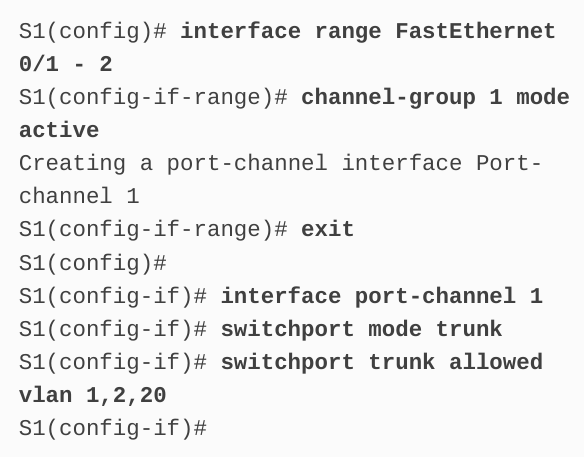

Table of Contents
1. EtherChannel
Can be used as a connection to an SVI
1.1. Introduction
EtherChannel aggregates links between devices into bundles. It is used to increase bandwidth, but at the same time a keep a redundant and loop free network.
There are two protocols, PAgP and LACP
1.2. EtherChannel operation
Link aggregation is comonly implemented between access layer and distribution layer switches to increase the uplink bandwidth.
1.2.1. Link Aggregation
There are scenarios in which more bandwidth or redundancy between devices is needed than what can be provided by a single link. Multiple links could be connected between devices to increase bandwidth. However, STP, which is enable on Layer 2 switches like Cisco switches by default, will block redundant links to prevent switching loops.
Link aggregation technology allows redundant links between devices that will not be blocked by STP. This technology is known as EtherChannel.
EtherChannel is a link aggregation technology that groups multiple physical ethernet links together into one single logical link. It is used to provide fault tolerance, load sharing, increased bandwidth, and redundancy between switchjes, routers, and servers
EtherChannel makes it possible to combine the number of physical links between the switches to increase the overall speed of switch-to-switch communication.
- bundling channels (links) into one logical link
- called as link aggregation in other standards
- used to provide fault tolerance
- physical links can be increased to increase the bandwidth
1.2.2. EtherChannel
Was originally developed by Cisco as a LAN switch-to-swtich technique of grouping several Fast Ethernet or Gigabit Ethernet ports into one logiacl channel. Whenan EhterChannel is configure, the resulting virtual interfac eis called a port channel. The physical interfaces are bundled together into a port channel interface.
- port channel the resulting virtual interface from EtherChannel
1.2.3. Advantages of EtherChannel
- most configuration tasks can be done on the etherChannel ports not on physical interfaces
- EtherChannel relies on existing switchports, cheap
- loadbalancing takes place on the links bundled
- load balancing is equally distributing data within the bundled links
- STP can still work with EtherChannel
- links inside the port channel might shutdown, but as long as there are ones wortking, it will work
1.2.4. Implementation restrictions
- interfaces cannot be mixed
- catalyst 2960 can only bundle up to six interfaces
- port channel names should be named consistently (configuration of native vlan, trunks, etc)
- currently, EtherChannel can consists of up to eight compatibly-configured ethernet ports. EtherChannel provides full-duplex bandwidth up to 800Mbps (Fast EtherChannel) or 8Gbps (Gigabit EtherChannel) between one switch and another switch of host
- individual etherchannel group memeber port configuration must be consistent on both devices. If the physical ports of one side are configured as trunks, the phycial ports of the other side must also be configure as trunks within the sam native VLAN. Additionally, all ports in each EtherChannel link must be configured as Layer 2 ports.
1.2.5. AutoNegotiation Protocols
- EtherChannels can be formed though negotiation using one of two
protocols: PAgP or LACP
- PAgP
- for cisco
- Port aggregation protocol
- LACP
- for open standard
- link aggregation control protocol
- PAgP
NOTE: It is also possible to configure a static or unconditional EtherChannel without PAgP or LACP
1.2.6. PAgP Operation
Is sa Cisco-proprietary protocol that aids in the automatic creation of EtherChannel links. When an EtherChannel is configured using PAgP, PAgP packaets are sent between EtherChannel-capable prots to negotiate the forming of a channel. When PAgP identifies matched Ethernet links, it groups the links into an EtherChannel. The EtherChannel is then added to the spanning tree as a single port.
When enabled, PAgP also manages the EtherChannel. PAgP packets are sent every 30 seconds. PAgP checks for configuration consistency and manages link addtions and failures between two switches. It ensures that when an EtherChanel is created, all ports have the same type of configuration.
NOTE: In EtherChannel, it is mandatory that all ports have the same speed, duplex setting, and VLAN information. Any oprt modification after the creation of the channel also changes all other channel ports
PAgP helps create the EtherChannel link by detecting the configuration of each side and ensuring that links are compatible so that EtheChannel link can be enabled when needed. The modes for PAgP are as follows:
- On
- This mode forces the interface to channel without PAgP
- interfaces configures in the on mode do not exchange PAgP packets
- PAgP desirable
- places an interface in an active negotiating state in which the interface initiates negotiations with other interfaces by sending PAgP packets
- PAgP auto
- places an interfaces in a passive negotiating state in which the interface responds to the PAgP packets that is receives but does not initiate PAgP negotiation
1.2.7. PAgP Modes
| S1 | S2 | Channel establishment |
|---|---|---|
| on | on | yes |
| on | desirable/auto | no |
| desirable | desirable | yes |
| desitable | auto | yes |
| auto | auto | no |
Class notes:
When a port is set to PAgP, it will try to negotiate with the other side.
PAgP packets are sent for the port to learn (like in STP)
- MANDATORY TO HAVE
- SPEED
- NATIVE VLAN
- VLAN ASSIGNMENT
- ON
- forces the interface to channel without PAgP
- does not exchange PAgP packets
- not counted as PAgP
- PAgP desirable
- places an interface in an active negotiation state in which the interface initializes
- PAgP auto
- places on interfaces in a passive negotiation
1.2.8. PAgP Modes
| mode | match | desc |
|---|---|---|
| on | des | no channel created |
| on | auto | no channel created |
| on | on | channel |
| des | auto | channel |
| des | des | channel |
| auto | auto | nook |
1.2.9. Configure Guidelines
- etherchannel support
- speed and duplex
- vlan match
- range of vlans (same)
1.2.10. LACP Operation
LACP is specified in IEEE 802.3ad and allows several physical ports to be bunmdled to form a single logical channel. LACP allows a switch to negotiate an automatic bundle by sending LACP packets to the other switch, much like PAgP. Because it is a standard of IEEE, it can be used to facilitate EtherChannels in multiventer environments. On Cisco devices, both protocols are supported
NOTE: LACP was originally defined as 802.3ad. However, LACP is now defined in the newer IEEE 802.1AX standard for local and metropolitan area networks
It provides the same negotiation benefirs as PAgP. LACP helps create the EtherChannel link by detecting the configuration of each side and making sure that they are compatible so that EtherChennel link can be enable when needed. The modes for LACP are as follows:
- On
- this mode forces the interface to channel without LACP
- interfaces configured in the on mode do not exchange LACP packets
- LACP active
- this LACP mode places a port in an active negotiating state
- ijn this state, the port initiates negotiations with other ports by sending LACP packets
- LACP passive
- places a port in a passive negotiating state
- in this state, to port responds to the LACP packets that it receives but does not initiate LACP packet negotiation
LACP allows up to eight active links, and also eight standby links. A standby link will become active should one of current active links fail
1.3. Configure EtherChannel
1.3.1. Configuration Guidelines
- EtherChannel support
- all ethernet interfaces must support etherchannel with no requirement that interfaces by physically continguous
- speed and duplex
- all interfaces in in a port channel must have the same speed and duplex
- VLAN match
- all interfaces inhe etherchannel bundle must be assigned to the same vlan or be configured as s trunk
- range of VLANs
- an ether channel suports the same allowed range of VLANs on all the interfaces in a trunking etherchannel
- if the allowed range of VLANs is not the same, the intefaces do not form an EtherChannel, even when they are set to auto or desirable mode
1.3.2. LACP Configuration
- Steps
- spaciface the interfaces that compose the EtherChannel using
interface range interfaceglobal config mode command - create a port channer interface with the
channel group identifier mode activecommand in interface range configuration mode. This identifier specifies a channel group number. The mode active keywords identify the port chanel as an LACp EtherChannel config - to change layer 2 setting on the port channel interface, enter port
channel interface configuration mode using the
interface port-channelcommand, followed by the interface identifier.
int range range-here channel-group id-here mode active exit interface port-channel 1 switchport mode trunk switchport trunk allowed vlan 1,2,20

- spaciface the interfaces that compose the EtherChannel using
1.4. Verify and troubleshoot EtherChannel
1.4.1. show interfaces port-channel identifier
displays the general status of the port channel interface
1.4.2. show etherchannel summary
when several etherchannels are configured on one device, this command can be used to display one line of information per port channel
1.4.3. show etherchannel port-channel
to display information about a specific port channel interface
1.4.4. show interfaces interface-id etherchannel
can provide information about the role of the interface in the EtherChannel
show interfaces port-channel show interfaces f0/1 etherchannel show etherchannel summary <--------------------------------------- most useful 'daw'
1.5. issues
- mismatch
- different VLAN
- trunking on a single interface
show run | begin interface port-channel channel-group 1 mode desirable